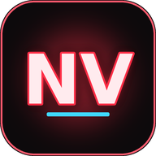

Noiverso
Il gioco di carte del gruppo. Installalo e giocaci a schermo intero, come un'app.
iPhone e iPad
- Apri questa pagina con Safari (con Chrome sull'iPhone non si può installare).
- Tocca Condividi in basso.
- Scorri e tocca "Aggiungi alla schermata Home", poi Aggiungi.
- Apri Noiverso dall'icona sulla Home: si apre a schermo intero.
Il gioco si aggiorna da solo: non devi reinstallarlo mai.
Android
- Il modo più semplice: tocca "Installa l'app" (oppure menu ⋮ di Chrome → "Installa app").
- In alternativa scarica il file .apk, aprilo e consenti l'installazione da "origini sconosciute" quando te lo chiede.
Windows
- Apri il file scaricato. Se compare "Windows ha protetto il PC", clicca Ulteriori informazioni → Esegui comunque (succede perché l'app non è firmata da un'azienda).
- Noiverso si installa e trovi l'icona sul desktop e nel menu Start.
Mac
- Apri il file .dmg e trascina Noiverso nella cartella Applicazioni.
- La prima volta: tasto destro sull'app → Apri → Apri. Se il Mac la blocca, vai in Impostazioni di Sistema → Privacy e sicurezza → Apri comunque.
Con Safari puoi anche usare File → Aggiungi al Dock.